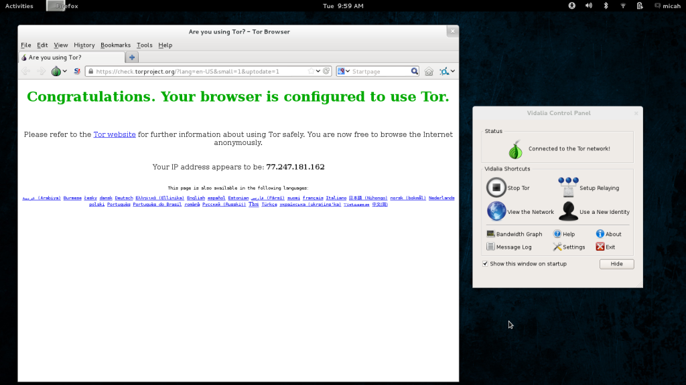
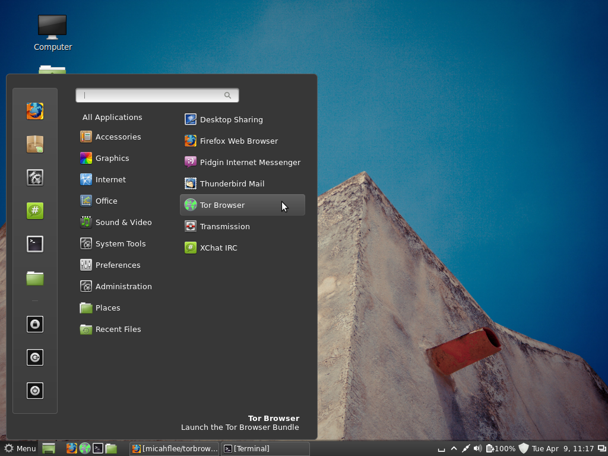
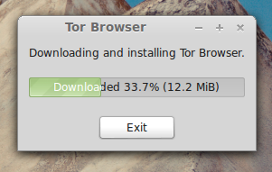
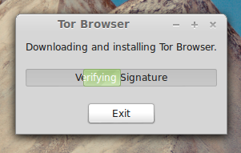
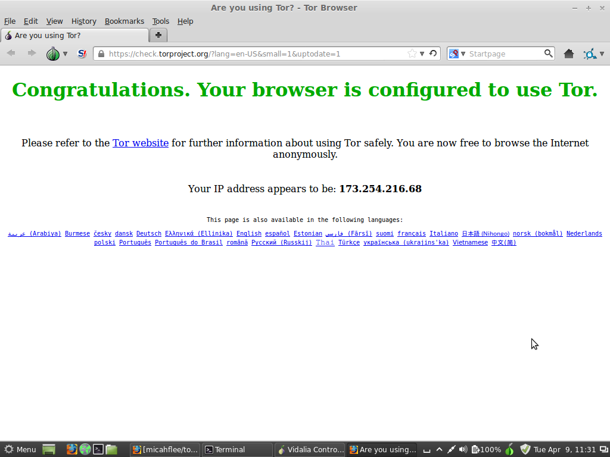
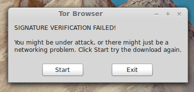

sudo apt-get install torbrowser
TL;DR: I wrote a piece of software called Tor Browser Launcher that downloads and auto-updates Tor Browser Bundle for you, in your language and for your architecture, and verifies signatures. I’d like help finding bugs before the initial release.
Over the years, Tor Project has done an amazing job at making Tor more user-friendly. In the past if you wanted anonymity you had to download and install Tor, maybe hand-edit your torrc file, and configure your browser to use a proxy server. You had to make sure that you didn’t have browser plugins like Flash or Java enabled that would compromise your anonymity. Eventually, this got easier when you could install the TorButton Firefox add-on, but even then you had to keep manually separate your own identity and your anonymous browsing.
Now all you have to do is head to torproject.org, click the large “Download Tor” button, and then download the Tor Browser Bundle (TBB). Then you extract it (normally to somewhere in your home directory, or to a USB stick) and run start-tor-browser, and wait to connect to the Tor network and for your anonymous browser to pop up with the friendly green “Congratulations. Your browser is configured to use Tor.” page.

Despite these advancements, Tor could still be more user-friendly.
If you want to install TBB for regular use on your computer, you don’t get a Tor Browser entry in your desktop environment’s menu system. You can’t easily add it to your Ubuntu Unity launcher, favorite it in GNOME 3, or stick it on a panel in Cinnamon or MATE (not to mention add it to your quick launch bar in Windows).
TBB doesn’t automatically update either. It warns you when you’re using an out-of-date version but you have to repeat the download and extract process manually. People often use Tor Browser infrequently enough to not bother with updating when they just want to quickly look something up anonymously, which compromises their security.
When users download TBB, Tor Project provides a GnuPG signature of the package, but roughly 0% of users, including the elitest of hackers, actually verify that signature to be sure they weren’t MitM’d during the download. All TBB downloads go over HTTPS (unlike some security tools), but there are still critical and widely publicized security problems with relying on the certificate authority infrastructure.
![GnuPG signatures][tbb_sig.png]
Finally, for GNU/Linux users, there’s no easy way to install TBB from the package manager, which is the preferred and expected way to install software on that platform. If it were installable from the package manager, it would open up the possibility for distributions to have Tor Browser installed by default.
These reasons are why I wrote Tor Browser Launcher. Check it out on GitHub.
Tor Browser Launcher is intended to make the Tor Browser Bundle (TBB) easier to maintain and use for GNU/Linux users. You install torbrowser-launcher from your distribution’s package manager and it handles everything else, including:
- Downloading the most recent version of TBB for you, in your language and for your architecture
- Automatically updating while saving your bookmarks and preferences
- Verifying the TBB’s GnuPG signature
- Adding a “Tor Browser” application launcher to your desktop environment’s menu
When you first launch Tor Browser Launcher, it will download TBB from https://www.torproject.org/ and extract it in ~/.torproject, and then execute it. When you run it after that it will just execute TBB.
I’m hoping to first get Tor Browser Launcher into Tor Project’s deb.torproject.org repository, and then later into Debian and Ubuntu, and other distributions as well like Fedora and Arch. I want Tor Browser Launcher to become the preferred way for GNU/Linux users to get TBB.
Eventually I’d also like to port Tor Browser Launcher to Windows and Mac OS X.
When you install Tor Browser Launcher, it adds a “Tor Browser” item to your desktop environment’s menu in the Internet category:

The first time you run it, or when it finds updates, it downloads TBB from https://www.torproject.org/, and it also verifies the GnuPG signature:


On success, it runs start-tor-browser, which loads Vidalia and Firefox. If you already have TBB installed, it immediately runs start-tor-browser:

If the GnuPG signature doesn’t check out, it throws an error:

I’d like your help. I think Tor Browser Launcher is about ready for it’s first release. I’m already working on getting it into deb.torproject.org, but first I want to find and fix any final bugs. Can you install it, try using it, and if you find anything wrong open a new issue on GitHub?
If you’re using Debian, Ubuntu, Mint, or a related distro, it’s easy to build a .deb from source and install it. First install git, python-stdeb, and all of the Tor Browser Launcher dependencies:
sudo apt-get install git python-stdeb python-gtk2 python-psutil python-twisted wmctrl gnupg
Then git clone it, and build and install the .deb:
git clone https://github.com/micahflee/torbrowser-launcher.git
cd torbrowser-launcher
./build_and_install.sh
After typing your password to install the .deb, you’re done. You should now have a “Tor Browser” menu item. If you want to see debugging information, run torbrowser-launcher from a terminal.
To see the discussion with the community that lead to this, check the comments on these two bugs: #3994 and #5236. Also, some discussion happened on the tor-talk and tor-dev mailing lists.
I also want to point out that Jamie Nguyen has successfully packaged Tor Browser for Fedora, though it’s not in the official repos. His solution doesn’t technically use TBB, but is still clever. I prefer Tor Browser Launcher though because it’s much less work to maintain (no need to update it each time there’s a TBB release), and if it ends up in distros that are slow to provide new versions of software (like Debian stable) users will still get the latest and greatest TBB.